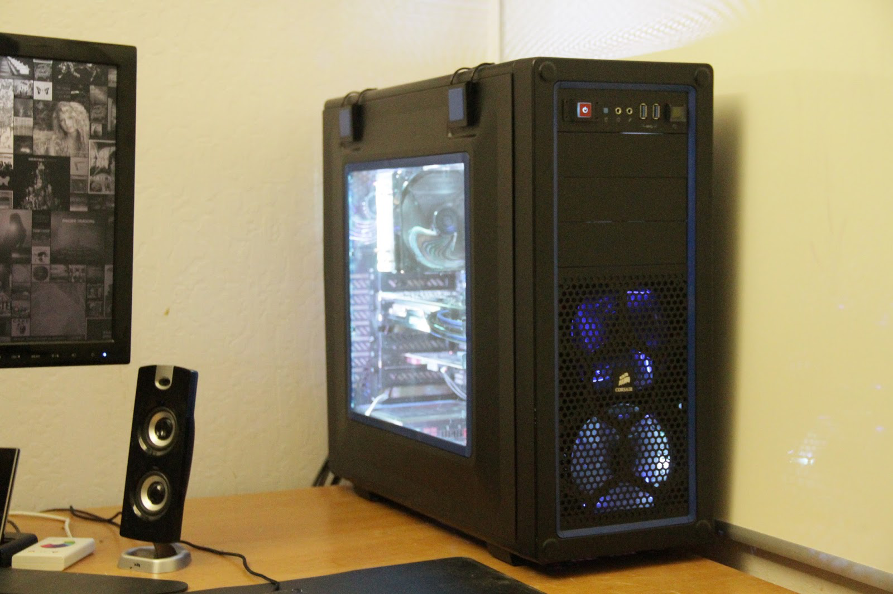

James Ly
Around
63.7% gear, if you measure by weight.
SMALL GEAR: Part One
// becoming a cyborg won't happen overnight, you know.
Bigger is better, they say, and yet, in the mid-2000s, everything was getting smaller, so much so that Zoolander made note of it. However, several years after the advent of the smartphone, everything is getting bigger again. Phones that require 2 hands to use are commonplace, and as a matter of fact, finding a well made smaller smartphone is getting increasingly harder to find.
Small Desktop, Large Desk
It’s a good time to be a PC enthusiast looking to cut down on their desk footprint. With increasing gains in hardware power efficiency and node shrinks, it’s becoming increasingly viable for PC enthusiasts to build a small gaming rig without compromising performance. Most, if not all motherboard manufacturers offer smaller motherboards with small form factor (SFF) computing in mind, and case manufacturers are likewise making smaller volume cases to accommodate smaller components.
That said, it’s much easier for new rigs to be built with small form factor in mind. Those with older hardware will have a bit of a tougher time, as the SFF craze only really picked up in the past two years or so. Owners of hardware made before this trend may have to do a bit more hunting to shrink their rig without replacing most of their parts. However, if you built a 4th-gen Intel Core rig, chances are that you’ve got a pretty decent selection of SFF parts to choose from.

Big, blue, and beautiful. But still big.
My personal rig before its dates itself between 2011 and 2012. The parts list can be seen on the right, and the goal of this build is to shrink the size of my build as much as possible with minimal investment. Of course, the two parts I must replace will be the motherboard and case, but hopefully that will be the only parts I have to replace.
The age of my build poses an interesting challenge. My current motherboard is Asus P8Z77-V, a solid mid-range motherboard built for performance builds. To continue with my theme of no-compromises shrinking, I set my eyes on the most-comparable mini-ITX motherboard of its class, the Asus P8Z77-I Deluxe, a motherboard so similar that the Asus marketing team saw fit to only change the last letter of the SKU (and a Deluxe)! Joking aside, the ITX board is actually an upgrade from my old motherboard as far as feature set goes; it adds a bluetooth antenna, eSATA, and extra USB ports. However, the real trick of the P8Z77-I is the use of a daughterboard to add extra circuitry at the expense of z-height. This allows the board to be just as powerful and overclock-ready as its ATX-sized brethren.
The one issue with this motherboard was that it was rather hard to find, since it was old enough to no longer be stocked in stores, but not quite old enough to be replaced by existing owners. I ended up paying over $120 for a 3-year old motherboard. I really don’t recommending paying that much for a motherboard that old, but I’m paying more for the privilege of owning a smaller PC.
The chassis was the most difficult choice for this build. While small volume took precedence, I also wanted a case that was compatible with my parts as they were. I was using an ATX sized power supplies, and a 155mm long one at that, and didn’t want to pay the $70-$80 to replace it, so I was limited to cases that allowed ATX power supplies. This is a crying shame, as I won’t be able to use cases like the NCase M1, one of the most popular (and expensive) SFF solutions, or many of Silverstone’s offerings. One case I was especially disappointed to miss out on was the Dan A4, a tiny little case that took up a tiny 7.25 Liters. However, these cases require SFX power supplies, which tend to be rather pricey and limited in how much power they output (which isn’t unexpected, since these PSUs shouldn’t be expecting to power more than 1 graphics card).
With this in mind, I set out to find the smallest case that accommodated an ATX power supply. I had originally wanted to use the Cougar QBX, which is a case used the same layout as the NCase M1, but was compatible with my existing power supply. Corsair also had a couple of neat looking cases. Their 380T had a handle and resembled a supercar, while their 250D opted for a more subdued look. And, of course, there was the ever-popular Bitfenix Prodigy, which came in more colors than were available in your basic colored pencil set. I also poked around Silverstone’s website for some prospective cases, since they were known for making a lot of SFF cases for home theatres and such. After collecting my candidates, I did some quick calculations using the dimensions from each manufacturer’s website to calculate each case’s volume.
NEXT TIME: JAMES MAKES A CHOICE